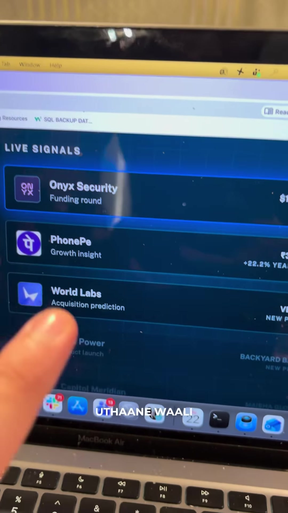
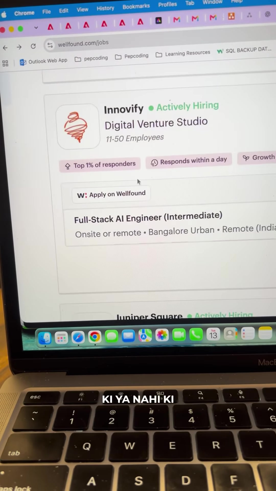

Career · Job-Switch
Funded Startup Job Infiltration: Crunchbase Signals, Wellfound Verification & Direct LinkedIn Outreach
Executive Summary
Applying to tech roles via mass aggregator boards (Naukri, generic LinkedIn Easy Apply) subjects candidates to the "ATS black hole," where hundreds of unvetted applicants compete for slow-moving corporate vacancies. In contrast, early-stage and growth startups that have freshly closed funding rounds (Seed, Series A, Series B) have urgent headcount mandates, approved venture capital budgets, and aggressive 30-day hiring goals.
This workflow outlines a 3-tier tactical strategy to bypass ATS filters by identifying live funding signals on Crunchbase, confirming open headcount on Wellfound, and pitching Talent Acquisition directly on LinkedIn.
The 3-Step Startup Infiltration Workflow
Step 1: Track Live Venture Capital Inflows on Crunchbase
Venture funding is the earliest leading indicator of tech hiring. When venture firms wire capital, startup founders immediately allocate 40–60% of proceeds toward engineering and product talent.
- Navigate to
crunchbase.comand access the Live Signals / Recent Funding Rounds dashboard. - Filter for companies closing their Seed Round, Series A, or Series B within the past 14 to 30 days.
- Identify high-growth tech domains (e.g. AI Security, Fintech, Spatial Computing / Generative Media).

Step 2: Confirm Active Headcount on Wellfound (AngelList Talent)
Rather than guessing what roles a newly funded company requires, verify active engineering requisitions on startup-native directories.
- Navigate to
wellfound.com/jobs(formerly AngelList Talent). - Search for the specific funded company identified in Step 1.
- Check the badges: look for Actively Hiring, Top 1% of responders, and Responds within a day.
- Examine specific requirements, salary/equity compensation ranges, and technology stack definitions (e.g., Full-Stack AI Engineer, Backend Go/Python, Intermediate/Senior).

Step 3: Direct Recruiter Infiltration on LinkedIn (Skip "Apply" Button)
The critical pivot in this framework is intentionally avoiding the platform Apply button. Applying through the form drops your resume into a static queue alongside dozens of generic applicants.
- Open LinkedIn and search:
"[Company Name]" + "Technical Recruiter" OR "Talent Acquisition" OR "HR Manager" OR "Founder". - For early-stage startups (11–50 employees), reach out directly to the Founder / CTO or the sole Head of People.
- Send a concise, value-focused connection request or InMail referencing their recent funding round and directly addressing an active role requirement.
Direct Outreach Message Blueprint
To achieve high response rates from startup recruiters and founders, avoid asking for a job directly. Instead, pitch immediate alignment with their post-funding roadmap:
Hi [Name],
Huge congratulations on [Company]'s recent [Series A / Seed] round!
I noticed on Wellfound that you are actively building out the engineering team for [Role Name, e.g., Full-Stack AI Engineer].
Over the past [X] years, I have built [specific relevant achievement or tech stack, e.g., scalable distributed systems in Python/FastAPI and sub-millisecond Redis caching pipelines].
I would love to share a 2-minute overview of my recent projects and see if my background aligns with your current technical roadmap.
Resume & portfolio attached for quick reference: [Link]
Best regards,
[Your Name]Verbatim Audio Transcript
[00:00 - 00:15] 18.2 LPA ka package le liya bhai is bande ne ek simple trick karke! Matlab tum maano ki raat ke 11:30 baj rahe hain aur main itna excite ho gaya yeh news tumhe abhi de raha hoon, subah tak ka bhi intezaar nahi hua. Bhaad mein gaya Naukri.com aur LinkedIn!
[00:15 - 00:27] Alag ek track batata hoon tumhe bhai, usse 5 din ke andar-andar tumhara bhi offer letter aa jayega. Poora roadmap janna hai toh neeche comment kar dena — DM mein roadmap bhejta hoon.
[00:27 - 00:37] Tumhe kuch nahi karna, tumhe jaana hai
crunchbase.compe. Wahan pe tumhe pata chal jayega kaun-kaun si company lately funding uthane wali hai, ya apni first round ya second round ki funding close karne wali hain.[00:37 - 00:48] Uske baad tumhe jaana hai
wellfound.compe. Wahan pe tumhe check karna hai ki yaar lately funded companies jo hain, unhone hiring chalu kari ya nahi kari. Bahut high chances hote hain ki company funding uthane ke baad hiring chalu kar degi.[00:48 - 01:03] Uske baad tumhe wahan pe apply bilkul bhi nahi karna hai! Uske baad tumhe jaana hai LinkedIn pe. Wahan pe us company ke HR managers, HR recruiters ko pakadna hai. Wahan pe unhe apni profile bhejni hai, apna resume bhejna hai, saari baat-cheet tumhe wahan pe karni hai.
[01:03 - 01:13] Bahut high chances hain tumhara 5 se 7 din ke andar-andar offer letter roll out ho jayega, kyunki startups ko bhai bande chahiye hote hain, specially funding uthane ke baad. Achha khasa package tumhe turant mil jaata hai. Jao bhai apply kar do!